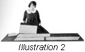

1926—The New-Way Course in Fashionable Clothes-Making
Lesson 47—The Evening Dress
The Evening Dress
In no other feminine garment is there such a wide scope for originality, such a splendid opportunity for artistic expression as in the evening gown. Here one may seek and find inspiration from countless sources—the flowers in spring-time, pink-tinged clouds, waves lapping against golden sand. Nature in her bountiful mood offers many suggestions, and one always has the costumes of other days to depend upon.
Not only are there many interesting courses of design for evening gowns, but there are many attractive materials and trimmings to select from. From the gauziest bit of tulle to the richest metal lace of gold, one may fashion a gown that has in its lines and colors the true expression of one's own individuality. The woman of artistic taste loves to create her own evening gowns, for they offer her an opportunity of self-expression that no other garment does.
The woman who is cool, self-possessed, always calm and well-poised, can find self-expression in designing for herself an evening gown of jade green—as cool as the depths of the sea—with trimming of cream-color maline or tulle to simulate the foam of breaking waves. And with it she may carry a huge ostrich fan of cream-color feathers to carry out the note of coolness.
The woman who is modest, retiring, inclined to be the least bit shy, can find self-expression in designing for herself a gown of chiffon or crepe-de-chine over a foundation of silver cloth. The foundation should be plain, undraped. The chiffon should be cut in the form of petals—each petal a different pastel shade, and all draped in soft effect over the silver cloth. This type of gown is charming and distinctive without expressing either coldness or warmth.
The gay, vivacious woman who wishes to express warmth and life in her evening gown can find expression in a gown of rich satin—severely simple in style and with only one huge rose as trimming. Or she may have a scarlet gown with dignified panels faced in some contrasting color that harmonizes with her own coloring.
With a world of style suggestions to select from, and the most exquisite materials and trimmings at one's command, the creating of the evening gown becomes a fascination. The woman who designs and constructs a gown that harmonizes not only with her personality and her coloring, but expresses also the mood of the wearer, will experience the same thrill of pride and satisfaction that the writer or artist feels when he knows that he has created a masterpiece.
The Etiquette of the Evening Gown
What are the occasions that call for an evening gown? When may it correctly be worn? And what are the accessories that contribute to make it what is familiarly known as "full dress"?
One wears "full dress," or evening dress, only on occasion of social formality. At the formal dinner, for instance, one wears decollete, with the hair arranged somewhat more elaborately than usual. Even in the dining rooms of the large hotels, where more freedom of choice is allowed, it is best form to wear conventional evening attire.
At the formal evening dance, one wears one's most important evening gown, avoiding conscientiously any suggestion of gaudiness or ostentation. The debutante should wear a delicately tinted gown, in pastel shades, or one that is pure white. The style should be youthful and simple, preferably bordering on the bouffant lines rather than on those that are severely slender. The neck may be cut square, round or heart-shaped, and both elbow-length and full-length sleeves are correct. The debutante rarely wears a sleeveless gown. Madame, her mother, however, may wear her most elaborate decollete.
Of course, one wears evening dress to the theatre and opera in the evening when one occupies a box. It should not be quite as elaborate, however, as the evening dress one wears to the ball. On any other occasions of social formality evening dress should be worn, but it should never be worn in the afternoon or to informal functions where other guests wear semi-evening or afternoon attire.
As for the accessories, one may wear one's most important jewels when one is in decollete. Diamonds are quite appropriate. However, the debutante who wears many jewels displays poor taste. For her, a string of softly glowing pearls or just one small diamond brooch is sufficient. Simplicity is the greatest charm of youth, and the wise young person does not sacrifice it to over-elaboration, even on the day of her debut.
The woman who wears evening dress may carry an ostrich fan in matching or contrasting color. This is an especially good plan when the gown is in one tone, unrelieved by any touch of color. A vivid fan will not only give the desired note of color, but will by contrast emphasize the color of the gown. In selecting an ostrich fan, be sure to remember what you have learned about color harmony.
Hats are never worn with evening dress. A shawl or scarf of fine lace may be thrown over the hair and shoulders. Or a small shawl may be tied around the head to keep the coiffure in place. Satin or metal pumps are usually worn, long gloves of white kid or silk and an evening wrap of some soft material in light shades complete the costume.
The woman whose purse permits only of one evening gown need not feel ill at ease or self-conscious if she wears it several times. Simplicity has a delightful charm of its own. If the gown is well made of excellent materials, and in a style and color that is becoming, she will be as effectively dressed as the much-bejeweled dowager.
Appropriate Materials
There are many handsome materials being made for the purpose of being transformed into exquisite evening gowns. There are beautiful metallic materials, woven into charming designs, some of them in two-tone effects. There are novelty beaded materials, and iridescent spangle materials. Then, of course, there are the fine lustrous satins and taffetas; the exquisite laces and georgettes. One may choose from a variety of materials as extensive as it is beautiful.
For the debutante who blossoms forth in her first evening gown, chiffon, net and silk georgette are the most appropriate materials. Taffeta may be used in the pale, pastel shades, but any dark-colored taffeta should be avoided. Satin and brocaded materials are too old and should not be used, except in combination with other more youthful materials.
For the woman who is older, black velvet and black Chantilly lace are ideal for the evening gown. She may choose lighter colors, if she wishes—gray and lavender being the most appropriate. Other materials the older woman will find appropriate are taffeta in the darker shades, crepe de chine, satin, brocades, and some of the newer novelty silks. She should remember that organdie, georgette and tulle are meant for youth.
Material for evening gowns should not be purchased unless seen under artificial light. Materials, like people, change color under electric light—and while a certain material may be becoming to you during the day, it may have an entirely different appearance in the evening under artificial light. Therefor it is best to buy your materials during the day, see them in daylight, and then insist upon seeing them under an electric light in a fairly dark corner of the shop. In this way, you will not make any mistakes that you will later regret.
For the straight-line evening gown spangled, embroidered and brocaded materials are used. Very often beautiful silk scarf are used. The bouffant gown may be made of material purchased by the yard—lace, net, satin, any material that drapes nicely and has body enough to hold its position. For the foundation of a bouffant gown there can be nothing prettier than metal cloth, especially when the over-dress is draped in soft, loose folds. Soft satin or silk over which metal lace is draped is a combination you will find very effective under artificial light. Black lace over silver metal cloth makes an excellent combination for the elderly woman, as does black lace over a gold metal foundation.
But let us see exactly what the bouffant and straight-line dresses are. These are the two distinct types of evening gowns you know. Every good dressmaker knows how to make them both.
The Two Predominating Styles
While the materials and trimmings used in evening gowns are constantly changing, the foundation lines invariably remain the same. The two types, bouffant and straight-line, may be interpreted in countless different ways—but the style foundations do not change. The bouffant type of evening gown is built on circular lines, usually kept in place by the use of wire; the second is the stately, well-draped type that is built entirely on straight lines.
The bouffant dress is becoming only to slender, medium-height people. Young women find this type of gown particularly becoming. The straight-line gown is more appropriate and more becoming to the older woman, and the woman who is stout.
The gown pictured is a straight-line. It may be developed in many different materials and combinations of materials. Here you may express your own personal preference. In suggestion, however, you may use all-over lace on a foundation of matching or contrasting satin. Or you may use silk net and silver cloth. If the foundation material used is soft, you may use brocade for the side draperies.
The evening gown which is used as an example in this lesson is a jade green spangled net scarf over taffeta. The taffeta is changeable in color—jade green one way, orchid the other. The harmony and contrast are most attractive. The methods of using both yard goods and a scarf are given in this lesson.
The Neck of the Gown
In no gown so much as the evening gown does the neck play so important a part. Very often it is the line of the neck that makes or mars the gown. you must be sure that it is a becoming neck, that it is appropriate to the gown and that it harmonizes perfectly with style, material and wearer.
The bateau neck is unbecoming to anyone with square shoulders and should be avoided as this line will spoil the entire dress for the square-shouldered person. She should wear the round-shaped neck or the V-neck. The V-neck is splendid for the stout woman as it gives added length to the costume and detracts from the width. For these same reasons, the tall, thin person should avoid the V-neck.
Many attractive neck-lines can be incorporated into the evening gown. Glance at the gowns on page 18 for instance, and note the several attractive types of neck-lines. Notice also how the type of the neck harmonizes with the type of the gown.
Square neck-lines are not often used on evening-gowns unless that type of neck happens to be more appropriate than any other to that particular gown. Sometimes, when the gown is made of sheer material, the foundation material underneath is finished with a square neck. But then the other material, used on top of the foundation, is finished with a different type of neck. Some very charming effects can be obtained in this way.
Some Suggestions
Before we proceed with the actual making of the evening gown, suppose we describe several attractive types of gowns for various types of figures. Detailed descriptions of various types of gowns will help you not only with a wise selection of your own gown, but with the designing of evening gowns for others.
A very charming evening gown, designed especially for a young, rather slender matron, is of dark blue velvet printed with sheaves of golden wheat. Printed velvet is a new fabric and is very effective. The girdle of the evening gown we are describing is of black cire ribbon which is tied in loops at the right side front. The ribbon is used also for an under-bodice which is revealed in front and back by the deep V's of the neckline. The gown has a long waist and a skirt draped in Grecian fashion. It may be sleeveless, or it may have tiny sleeves of black chiffon.
For the tall woman, we have in mind a most unusual type of evening gown. It is of sky blue georgette crepe with a slip of silver cloth. A most unusual combination, and it gives a striking effect that is just right for the tall, stately type of woman. The tight bodice of this dress is covered with crystal bugles and is finished with a Second Empire neckline. This is the low-cut neck with shoulder-straps, the shoulders being entirely exposed.
A gown for the rather stout woman is of velvet, designed in slim, straight lines that drape themselves attractively on one side. From the point of drapery, a cascade of jet falls gracefully and loses itself in a pointed train of the material. The gown has a round neck, is sleeveless, and is developed of lustrous black velvet. The stout woman will find black velvet very becoming to her for evening wear.
A satin gown arranges itself in petals for the very young person who wants something youthful. The gown is bouffant in style, with a round neck and tiny petals of the material grouped over each shoulder to form a semi-sleeve. The skirt is rather full and the bottom is scalloped to give the effect of petals. Bias binding finished the petals neatly. This gown may be of satin or taffeta and in any light color that is found becoming. A corsage bouquet of artificial flowers is the most effective trimming.
The Semi-Evening Gown
For those who attend dinners and evening entertainments that are not of an extremely formal nature, and who do not wish to wear decollete there is the semi-evening gown which is quite charming. It is more simple in design than the evening gown, less elaborate, but quite as effective. The color and style are at the discretion of the individual, of course, but the semi-evening gown invariably has sleeves and is never decollete.
Silks of all kinds may be used for the semi-evening gown. Some of the newer printed silks are ideal for this purpose. The lustrous softness drapes nicely, and their colors lend themselves to striking harmonies. The newer crepes, heavy in substance and light in color, are also appropriate for the semi-evening gown. All elaborate materials such as brocades and rich embroideries should be avoided. Velvet, however, may be used if it is interpreted in a simple style.
With the semi-evening gown one wears a hat. It is only when one is attired in full dress—in conventional evening costume—that one omits the hat. With any other costume the hat should be worn. An evening cape may be worn with the semi-evening gown, but a simpler cape would be more appropriate.
That woman's crowning glory is her hair is trite—but true. The woman who wishes to be correctly gowned in every detail, always has her coiffure arranged in the manner most appropriate to her costume. Only in the evening does she wear heavy bandeaux, aigrettes or similar hair decorations—and then, only when she is in evening attire. If she is wearing semi-evening gown, she arranges her coiffure with more regard for simplicity and omits all ornaments.
Comfort in Evening Clothes
There are some people who never feel entirely at ease in evening clothes, who never seem to be comfortable. It is not always because these people are not accustomed to wearing evening dress. Sometimes, they do not realize that comfort in dress is as important as beauty in dress—that one must have grace and ease of manner before one can be truly considered well-poised and well-dressed.
How can one hold a quiet, serious, calm conversation when one's foot aches? How can one sit gravely and patiently through a long concert when one's too-tight gown grows ever more and more irritating? To be uncomfortable is to be conscious of what one is wearing—and of course we all know that the well-dressed woman is never conscious of her clothes.
Therefore, when you plan your evening gown, be sure to give thought and consideration to the matter of comfort. Avoid a style that you know will be uncomfortable—although you know it will be extremely becoming. Do not choose shoes that are too small. Make the girdle loose enough, the skirt wide enough. If your gown will be comfortable as well as becoming, you will know instinctively that you are well-dressed—and with this knowledge comes the dignity that adds charm to your costume.
Don't let discomfort rob you of the graceful ease of manner that is so important in the ball-room, the drawing-room, the dining room. Whether you are in formal evening attire, or in street attire, be sure that you combine style with comfort. This is particularly true in the matter of evening clothes, for here one is tempted to ignore comfort in the quest of the original. Make your evening gown the ideal combination of comfort and charm. Then you are sure to be happy and at easet at the formal function.
Making the Gown (Illustration 47-1 -2 and -3)
Before starting your evening gown, be sure that all your equipment is in readiness and that all your tools are in good condition. The sewing machine should be in smooth running order and absolutely spotless. Attend to all important details—such as providing correct thread, needles, etc.—before beginning the actual construction of the dress.
It is not necessary for you to make the evening gown of the material and colors the one pictured was made. Many other interesting and attractive combinations will suggest themselves to you, and here is an opportunity for you to test your knowledge of color harmony and individual color requirements. You will notice that this is a sleeveless gown—as the evening gowns of the present time are.
The pattern should be as near the required size as possible. Always choose a pattern larger rather than smaller—for the alterations in this case are simpler and less confusing.
- Press and alter the pattern. Identify each part and write its name over it to avoid confusion later. (Lesson 19.)
- Prepare the material. If it is wrinkled or creased in any way, be sure that these blemishes are removed before cutting. If silk net is to be used, it must be pressed first with a warm iron. Do this pressing very carefully, and do not use an iron that is too warm as it likely to draw the net into a tangle. Never press spangled net or spangled material of any kind, as spangles are made of a gelatine substance which melts when heat is applied. Press embroidered material with the right side down and with a heavy bath towel or blanket beneath it. Beaded fabrics may be pressed in the same way, but be careful not to crush the beads or cut the material by pressing down on the beads too heavily.
- For the dress itself, there are two parts in the pattern. Three pieces are to be used for the girdle. The dress is a slip-over model, and if you find that the neck opening is not large enough to admit the head, open the shoulder seams for a short distance from the neckline and finish as a placket. Use small snap-fasteners to effect a closing at these openings. However, if the dress is as low in the neck as the one pictured, these shoulder openings will not be necessary.
- Lay the foundation material on the table with the lengthwise fold toward you.
- Place the pattern on this material, the center front and center back of the pattern on the lengthwise fold. The up and down should be properly placed and the material should run in one direction on both front and back.
- Proceed to cut according to the pattern, making all necessary construction marks. These marks should be made carefully so that they will not come out before the dress is completed. Mark the center lines also.
- Cut and mark the over-dress in exactly the same way if it is to be of crepe or other material purchased by the yard.
- If no foundation is to be used, but instead a band is to be used at the bottom of the dress, proceed to cut this band now. This band is a fitted facing attached and turned up to the right side.
- Now baste the dress together at the underarm seams, matching the construction marks. Any seam suitable to the material may be used.
- The plaits in the dress should now be basted, both front and back. The plaits should be sewed in by hand as far as indicated by the pattern if the material is very fine—such as chiffon, crepe or georgette.
- Close the shoulder seams.
- The dress should now be slipped on the padded form or on the person and any necessary alterations made. These alterations should be made either on the underarm or shoulders. No alterations will be necessary if the pattern was properly altered in the beginning.
- Now remove the dress and stitch the seams. If the material is beaded, spangled or heavily embroidered, make the seams by hand using a fine running stitch and alternating with an occasional back-stitch. The back-stitches give strength to the seam.
- When the seams are finished, bind the neckline. Do this with material that is suitable in every way, for this bound neckline will be the most prominent line in the finished dress. If you are using a foundation dress, bind the neck of the overdress and face the neck of the foundation.
- The armcye of the overdress should be bound, and the armcye of the foundation dress faced, using the exceptional type of facing. (Lesson 8.) Bind both neck armcye of the dress if no foundation dress is used.
-  From the material provided for this purpose, cut the sash loops and girdle. (Illustration 47-2.)
- These should be finished in a manner suitable to the material used, and suitable also to the finish used elsewhere on the gown. Of course, if ribbon is used no finish will be needed. If net or other thin material is used, a fine picot edge may be used as an appropriate finish.
- Make and join the loops and ends as indicated in the pattern. Later in the process of construction, these will be attached to the girdle.
- If you are using beaded, spangled or heavily embroidered material in the overdress the fulness should be arranged and tacked to the under dress before the length is determined. Tack it beneath the sash.
- Once again, slip the dress on, either on yourself or the padded form, and adjust the shoulder seams and neckline. The binding of the neck and armcye will extend beyond the edge of the foundation dress when the shoulder seams and neckline are in the proper position.
- The hem should now be turned in the skirt, making the skirt the proper length. First turn the hem in the foundation dress and then in the overdress. Both may be the same length or the under dress may be shorter if so desired.
- To determine these lengths use the skirt gauge at the edge of the dressmakers' square.
- Making the opening at the side, apply and fit the girdle at the waist. Arrange the panniers or sashes at the sides in the most becoming way. Different figures have different requirements, you know—and you may find that quite narrow pannier are more becoming to you than those that are wide and flat.
- Now remove the dress and finish the bottom.
- The outside dress and the foundation should be tacked together at the armcye and neck. Use back stitches and make them small and firm.
- On the right hand end of the girdle make an underturning and sew on hooks. On the opposite end of the girdle sew flat eyes to match. Then tack the center front of the girdle to the center front of the dress and sew the sashes to the sides of the girdle.
- You may, if you wish, add sleeves to this dress. In this case refer to Lesson 42 which teaches the making of a one-piece dress and make the waist lining and sleeves exactly in the same manner as is taught in that lesson.
Your evening gown is now completed. It is based on the long-straight-line type of gown and using this as a foundation you should be able to utilize your knowledge of design to create many other attractive evening and semi-evening gowns.
If the gown is to be sleeveless, the over dress may be made of an attractive scarf, such as one sees in the stores. If a scarf is used do not shape the armcye, simply cut and finish the neck opening and allow the edges of the scarf to drop over the shoulders.
The amount this drops may be regulated by a plait on the shoulder. This plait will be made in the same way the plait in the foundation dress is made and will give an added fulness across the bust.
If the figure permits, the edges of the scarf may be joined at the underarm seam but this is not necessary. See that the entire draping of the over dress gives soft easy lines.
Before leaving this lesson, see if you can design two or three evening gowns. Take into consideration all you have learned in design—all about unity and balance and harmony. Make one gown for a very particular occasion when you want to appear calm and dignified. Make the other gown for an occasion when you want to appear gay and happy. It is not necessary to make the gowns if you do not want to; simply write out or sketch exactly what materials you would use and what styles you were making them. It is excellent practice.